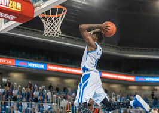

O basquete é um dos esportes mais dinâmicos e emocionantes do mundo. Criado em 1891 por James Naismith, nos Estados Unidos, o objetivo era desenvolver uma atividade física indoor durante o inverno. Desde então, o basquete evoluiu e se tornou uma modalidade global, presente em escolas, clubes e grandes arenas.
O basquete é disputado entre duas equipes com cinco jogadores em quadra. O objetivo é marcar pontos ao arremessar a bola dentro da cesta adversária, que fica a 3,05 metros de altura. A partida é dividida em quatro períodos, geralmente de 10 ou 12 minutos, dependendo da liga.
Os pontos são marcados de três formas:
- Lance livre: 1 ponto.
- Arremesso dentro da área de dois pontos: 2 pontos.
- Arremesso fora da linha de três pontos: 3 pontos.
A equipe que tiver mais pontos ao final do jogo vence.
O basquete exige:
1. Velocidade e agilidade: para driblar, defender e atacar.
2. Coordenação motora: essencial para passes, arremessos e movimentação.
3. Trabalho em equipe: cada jogador tem um papel estratégico.
4. Resistência física e mental: o ritmo do jogo é intenso e exige foco constante.
A principal liga mundial é a NBA (National Basketball Association), nos Estados Unidos, que reúne os maiores talentos do esporte e é referência global. Ídolos como Michael Jordan, LeBron James, Kobe Bryant e Stephen Curry marcaram gerações com suas habilidades e conquistas.
No Brasil, o basquete tem tradição e grandes nomes, como Oscar Schmidt, Hortência e Magic Paula. O país participa de competições internacionais e possui ligas nacionais como o NBB (Novo Basquete Brasil), que fortalece o esporte e revela novos talentos.